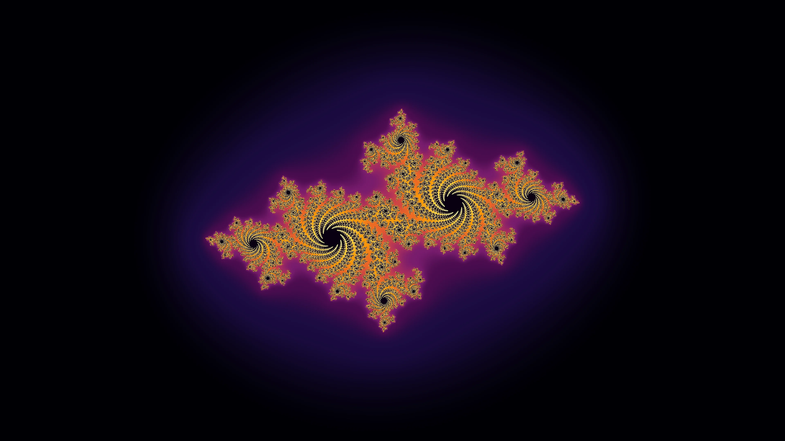

Seed of LifeSeven circles, hex symmetry
A cosmographer's instrument · v7.0.1
Forms&fractals.
This studio invented none of these figures. It only brings them into view, in mathematics and in glass.
Mandelbrot
z = 1.0×

58
Fractal types
183
Sacred patterns
51
Curated palettes
10⁶⁰⁺
Deep-zoom
0
Dependencies
The Instrument
A telescope makes the night sky legible. This instrument does the same for the mathematics of form, rendered at the precision its proofs demand. It disappears into what it shows: the canvas takes most of the screen, and every control waits at the edge until you reach for it.
Forms shipped
in this box.
A taste of the catalog. The studio carries 241 named forms in total (58 fractal types and 183 sacred-geometry patterns): the Mandelbrot at degree-3 perturbation deep zoom, all 13 Catalan solids, both 2023 aperiodic monotiles, the Klein quartic, Mathieu group Cayley graphs, the Sri Yantra at canonical Kulaichev concurrence. These are six.
Sri YantraNine triangles, central bindu
Maurer Rosen=6 d=71
PentagramCompound of 5 inscribed
Mandelbrotz² + c, |z| ≤ 2
Tesseract4-cube, 3D-projected
Lineage.
The figures in this studio are not invented. They are inherited. Six of the people we owe.
Johannes Kepler
Discovers the rhombic dodecahedron and sets out the harmonic geometry of the Platonic solids. The Mysterium Cosmographicum maps the inner planets onto the dodecahedron-icosahedron pair.
Harmonices Mundi · 1619Felix Klein
Defines the Klein quartic and its automorphism group PSL₂(7), achieving the Hurwitz upper bound of 84(g − 1) = 168 symmetries on a genus-3 Riemann surface.
Über die Transformation siebenter Ordnung · Math. Ann. 14Heinz Hopf
Constructs the fibration S¹ → S³ → S². Each point of the base S² lifts to a great circle of S³; in stereographic projection, the great circles become linked rings, the Hopf invariant.
Über die Abbildungen der dreidimensionalen Sphäre · Math. Ann. 104Roger Penrose
Constructs the kite-and-dart aperiodic tiling, proving that fivefold symmetry can tile the plane without translational periodicity. The kitchen-floor problem solved fifty years before quasicrystals were discovered.
The Role of Aesthetics in Pure and Applied Mathematical ResearchBenoît Mandelbrot
Iterates z² + c on an IBM mainframe and prints the boundary of what would become the most famous mathematical object of the late 20th century. The fractal nomenclature follows.
Fractal Aspects of the Iteration of z → λz(1 − z) for Complex λ and zSmith, Myers, Kaplan, Goodman-Strauss
Identify the Hat, a single tile that aperiodically tiles the plane. Three months later, the Spectre, a chiral aperiodic monotile. The decades-long search for an einstein, ended in a year.
An Aperiodic Monotile · arXiv:2303.10798The mathematics.
The studio is, structurally, a small library of theorems being evaluated against the canvas. Eleven of the methods being computed, by domain: the equations the kernel actually iterates, with the canonical citations. Calibration cards, not a textbook.
Escape-time iterationMandelbrot family · 2D escape time
zn+1 = zn² + c ; escape at |z| > 2
Each pixel is a point c ∈ ℂ; the GPU kernel iterates until escape or until maxIter. Burning Ship folds |Im(z)| on the imaginary axis; Tricorn conjugates; M3 / M4 raise the exponent to 3 and 4; Phoenix adds a second-order memory term p · zn−1; Celtic folds |Re(z² )|; Lambda iterates z(1−z); Buffalo and Newton complete the family.
Ann. NY Acad. Sci. 357
Deep-zoom perturbation10⁶⁰-zoom interior renders
Δn+1 = 2·Zn·Δn + Δn² + δ
A reference orbit is iterated in 256-bit fixed-point on the CPU; every other pixel is rendered as a perturbation Δ against it. Past 10²⁵ the kernel switches to a degree-2 Taylor series approximation; past 10⁶⁰, degree-3. Glitch detection rebases the reference when cancellation collapses |Z + Δ| toward zero (Pauldelbrot's criterion). Burning Ship, Celtic and Phoenix carry their own δ-recurrences past 10¹³ (fold-exact |·| arithmetic; Phoenix's memory term tracked exactly), and every integer power 2–8 of the z-family gets the generalized binomial recurrence.
fractalforums.com
Newton iterationroots of unity, 5 fractals
zn+1 = zn − f(zn) / f'(zn)
For f(z) = zn − 1 the iteration converges to one of n roots of unity; each pixel colored by which root it lands on, lightness encoded as iteration count. The Cayley variant uses a non-rational f with three real fixed points and a basin-of-attraction structure first studied by Hubbard & Schleicher.
Compl. Var. Theory Appl. 8
Descartes circle theoremApollonian gasket
k4 = k1+k2+k3 ± 2√(k1k2 + k2k3 + k3k1)
Curvature k = 1/r; outer container has k < 0. The complex-valued Descartes formula recovers the new circle's center z4; the recursion is depth-capped and produces a residual set of Hausdorff dimension 1.30568673…, the Apollonian dimension computed by McMullen via thermodynamic formalism.
McMullen 1998
Schläfli regular polytopes3D + 4D, 46 patterns
Schläfli symbols: {3,3} … {3,3,3,3}
600-cell {3,3,5} : 120 V, 720 E, 1200 F, 600 C
120-cell {5,3,3} : 600 V, 1200 E, 720 F, 120 C
The five Platonic solids extend through the thirteen Archimedean and thirteen Catalan duals to the six convex regular 4-polytopes (5-cell, 8-cell, 16-cell, 24-cell, 120-cell, 600-cell), then to nine of the ten Schläfli–Hess regular star polytopes. Vertex sets from Coxeter Table I; stereographic S³ → ℝ³, orthographic ℝ³ → ℝ².
Coxeter 1947
Golden-angle phyllotaxisspiral lattices
θi = i · π(3 − √5) ≈ 137.50776° · i
ri = R · √(i / N)
The divergence angle is the irrational angle most resistant to rational approximation, the inverse of the golden ratio in radians per turn. Vogel's parametrisation distributes N seeds on a disc with the densest packing achievable without translational symmetry; Fibonacci spiral arms emerge spontaneously from the parastichy bands.
Math. Biosciences 44
Robinson triangle deflationPenrose tilings · Hat · Spectre
acute → 1 acute + 1 obtuse
obtuse → 1 obtuse + 1 acute
ratio : φ = (1+√5)/2
The Penrose P2 (kite-and-dart) and P3 (rhombi) tilings emerge from φ-self-similar substitution on the two Robinson half-triangles, generating five-fold-symmetric aperiodic tilings of the plane. The Hat (March 2023) and Spectre (May 2023) closed the einstein problem: a single tile that tiles the plane only aperiodically.
Myers, Kaplan,
Goodman-Strauss 2023
Möbius dynamicsIndra's Pearls · Kleinian groups
z' = (μz + 1) / (z + μ̄)
μ ∈ ℂ on the Maskit slice
The two-generator Kleinian group acts on the Riemann sphere via Möbius transformations; the fixed-point pair orbit closes onto the limit set, a self-similar Cantor-set fractal. Maskit's slice μ parameterises the discrete-faithful representations; pearls render as iterated images of seed circles.
Wright 2002
Reaction-diffusionGray-Scott · Gierer-Meinhardt
ut = Du∇²u − uv² + F(1 − u)
vt = Dv∇²v + uv² − (F + k)v
Two-species reaction-diffusion on a torus. The control plane (F, k) partitions into Pearson's empirical regions: spots, stripes, mitosis, solitons, chaos. Iterated through finite-difference Laplacian on a workqueue grid; the fixed initial seed evolves toward Turing-pattern attractors.
Science 261
Lenia continuous CAsolitons in continuum
At+Δt = clip( At + Δt · G(K * At) )
Conway's Game of Life with three discrete axes (space, time, state) replaced by their continuous limits. Smooth growth function G applied to a smooth-kernel convolution K * A. The expanded state space hosts hundreds of named solitons (orbiums, gliders, spinners) that emerge spontaneously from rule space.
arXiv:1812.05433
Strange-attractor flowsLorenz · Hénon · Rössler · Clifford · de Jong · Dadras
ẋ = σ(y − x)
ẏ = x(ρ − z) − y
ż = xy − βz
Strange attractors, continuous 3D flows integrated via Runge–Kutta 4 (the Lorenz butterfly's twin lobes, the Rössler band's single fold) and discrete iterated maps (the Hénon quadratic crescent). The orbit never closes; long integration draws each attractor's characteristic geometry. Eighteen ship, each one's parameter space exposed as sliders.
J. Atmos. Sci. 20
Specimen card.
The technical envelope. Read it like a card from a Voyager probe: what we sent, in what container, with what guarantees.
AEON · v7.0.1
- Form factor
- One HTML file · ~3.8 MB · ~62 KB bundled fonts · service worker for offline · © 7th Frontier, Inc.
- Renderers
- WebGL2 (escape-time + 3D raymarched) · Canvas 2D (geometry, IFS, attractors) · two web workers (geometry off-thread + CPU fractal off-thread)
- Deep zoom
- Degree-3 Series Approximation past 10⁶⁰ · multi-pass GPU glitch correction · Pauldelbrot rebase · whole-catalog 64-bit sharp zoom to 10¹³, per-type perturbation past it (Burning Ship, Celtic, Phoenix, Multibrots, integer powers 2–8)
- Catalog
- 58 fractals · 183 sacred-geometry patterns · 51 palettes · 102 fractal-flame variations · 4D polytopes · Mathieu groups · Catalan solids
- Interop
- Apophysis 7X .flame round-trip (with motion keyframes, HSV palettes, finalxforms) · Adobe Cube .cube LUT import · UGR / MAP / Adobe .ase / GIMP .gpl palette interchange · PNG metadata · frame-exact video export (MP4/WebM)
- Accessibility
- WCAG 2.1 AA (axe-verified) · keyboard-rebindable · reduced-motion respected · 44×44 touch targets · high-contrast mode · screen-reader friendly
- Build envelope
- Zero npm dependencies at runtime · zero external HTTP origins · single-file deliverable · CSP script-src SHA-256 hash hardening · 150+ test suites across 4 tiers + 33 static lint gates (unit / consistency / math / mutation / fuzz / parity / smoke / ui / integration / render-audit / worker-parity / visual / a11y / WebGPU / deep-zoom / user-journeys)
- Contract
- Open the HTML. The application runs. As long as a browser exists, this artifact exists.